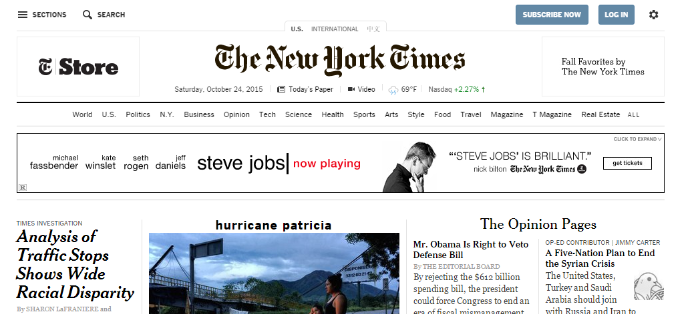

Hi, I'm
I have been working for Pearson for the past 18 years. There I gained much experience in school assessments for grades Kindergarden to High School. Enjoyed working with many states, including Puerto Rico. While working in San Antonio, my team included co-workers in Iowa, Austin, and India. We had daily meetings thru different media. Pearson has been going thru major adjustments, one has been to eliminate printed media, and move on to digital only. The major downsizing affected me. Thus I am being forced to re-brand myself and work as a Software Developer in new areas. Have decided to try front end development in web designs.
I currently live in San Antonio, Texas. Moved to San Antonio from Oxnard California, where I grew up. Would like to someday move back, I miss the beach.
I enjoy working on my home. It is an 80 year old house and needs many repairs.
A job with a home life - job balance.
This sample snapshot shows the use of development tools using Chrome browser.
Title Hurricane Patricia was changed to hurrican patricia.
Title Opinion Pages were also modified from OPINION PAGES.
This image is part of a larger web page.